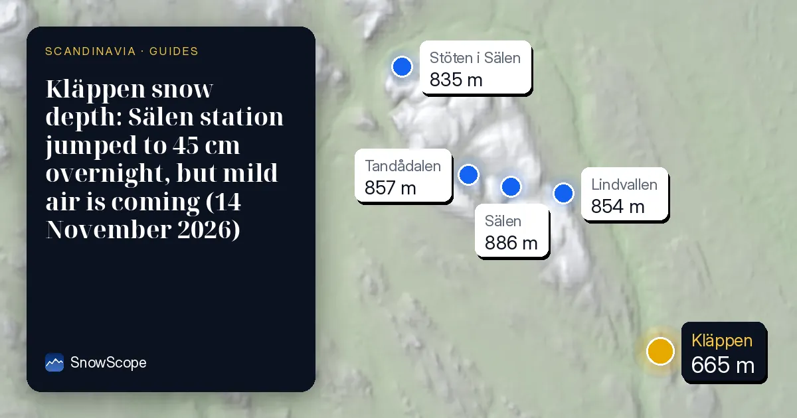

Kläppen snow depth: Sälen station jumped to 45 cm overnight, but mild air is coming (14 November 2026)
A single night brought winter to Western Dalarna. Sälen weather station, 13 km north of Kläppen at 364 m elevation, rose from 11 cm to 45 cm between the mornings of 12 and 13 November. This sudden jump tells only part of the story: a warm spell is forecast to arrive within days and soften much of what just fell.
See the live snow forecast for Kläppen in the SnowScope appSnow depth, powder alerts and the 3D map, free.

How snow depth works in this region
Weather stations and ski resorts measure different things. A station sits in a clearing and records fresh, settled snow at one exact spot. A ski resort estimates what skiers will find across its slopes after the snow is tracked and packed. When Sälen showed 45 cm and Kläppen reported 25 cm on the same morning, both numbers were true: they were just measuring different surfaces and timings.
Nearby Malungsfors at 321 m rose from 5 to 21 cm, and Gopshus near Mora from 12 to 33 cm. The scatter reflects the local terrain and how snow settles on different slopes. Across the past seven days, our estimate is about 20 cm of new snow at Kläppen, the lower end of what fell.

Rain and warmth arrive this week
The next seven days bring almost no fresh snow at the base (355 m) and only about 5 cm at the top (665 m). More important: the forecast shows rain will dominate at the base level. The snow line is expected to climb to around 560 m, which puts it near the top of the lifts.
This means much of the fresh snow will turn wet and heavy, then shrink. Snow on the ground does not vanish overnight, but the cover on lower slopes will thin noticeably. If you want to see Dalarna white, this weekend is the window before the air warms.
Where November stands in the long record
Over 46 past winters, Kläppen usually holds only 6 cm by 14 November and 15 cm by 30 November. One winter in five sees bare ground on this date. Today's 45 cm at Sälen is far above the norm for mid-November, so this event is real and uncommon.
December is when the base typically builds depth. By 15 December, the median is 24 cm. But the longer trend is downward: the median peak depth in the first 15 winters was 81 cm, and in the last 15 winters only 58 cm.
When the resort opens and what to expect
Kläppen's official season runs from 11 December 2026 to 4 April 2027. No lifts were running on 13 November. The resort will announce its opening date once it has enough snow and infrastructure ready on the terrain it plans to operate.
By late November and into December, the SnowScope map will show how the snow settles across base, mid-slope and summit as the weather pattern develops. Watch the official avalanche bulletin from Lavinprognoser before you go off-piste.
Timing matters for the next ten days
By 21 November, the median depth in past winters is 9 cm at the base, with a one-in-ten chance of 36 cm if snow continues. By 30 November it rises to 15 cm at the base. By 15 December it reaches 24 cm, the month when the cover usually locks in.
What falls this week matters: if the mild spell passes quickly and cold returns, the base will gain depth steadily toward December. If the warm air lingers, Kläppen will reset to thin cover and wait for the next pulse of cold weather from the north.
Tips for skiers
- Visit Dalarna this weekend if you want to see the fresh snow cover while it still stands. Forecast rain next week will soften it.
- Watch the snow line. At 560 m, it cuts across the mid-slopes. Upper runs will stay white longer than lower ones.
- Wet snow on trees can break branches and block forest roads. Drive slowly in the region over the next few days.
- Check Lavinprognoser's avalanche bulletin before any off-piste skiing. Fresh snow on steep terrain always carries risk.
- The gap between station readings and resort estimates is normal. Wait for Kläppen's official opening announcement rather than guessing from weather station numbers alone.
About these numbers
Resort snow depths are the deepest snow on the resort's upper slopes on the date shown; they are estimates for an area, not a measurement at one point. Forecasts can change. Always read the official avalanche bulletin before going off-piste.
Official avalanche bulletins: Lavinprognoser (Naturvårdsverket)
Cite this report
For research, teaching or the press: the numbers and charts are free to reuse under CC BY 4.0 with this citation.
SnowScope (2026), Kläppen snow depth: Sälen station jumped to 45 cm overnight, but mild air is coming (14 November 2026), https://snowscope.app/blog/en/2026/11/klappen-snow-depth-14-november-2026.html, accessed 2026-11-14
SnowScope (Atlas Labs). (2026, November 14). Kläppen snow depth: Sälen station jumped to 45 cm overnight, but mild air is coming (14 November 2026). SnowScope snow reports. https://snowscope.app/blog/en/2026/11/klappen-snow-depth-14-november-2026.html
BibTeX
@misc{snowscope2026klappensnowdepth14novemb,
author = {{SnowScope (Atlas Labs)}},
title = {Kläppen snow depth: Sälen station jumped to 45 cm overnight, but mild air is coming (14 November 2026)},
year = {2026},
month = nov,
howpublished = {\url{https://snowscope.app/blog/en/2026/11/klappen-snow-depth-14-november-2026.html}},
note = {Published 2026-11-14 13:59 UTC; accessed 2026-11-14}
}· CC BY 4.0 · Methods, data and tools →
Kläppen: snow and temperature by height, this winter vs last (tools) →
Follow Kläppen
Free: a message when fresh snow is coming, and the forecast every morning.
More snow reports

Stockholm measured 0 cm of snow on 13 November 2026. The capital remains snow-free while the north gets its first significant cover.

Stockholm has 0 cm of snow on 13 November. The nearest snow is 75 km away. Here are dog-friendly options in the city and when snow may arrive.

Rovaniemi has 7–8 cm of snow on 13 November, with 5 cm more forecast for the weekend. Thin but steady for the Arctic Circle.